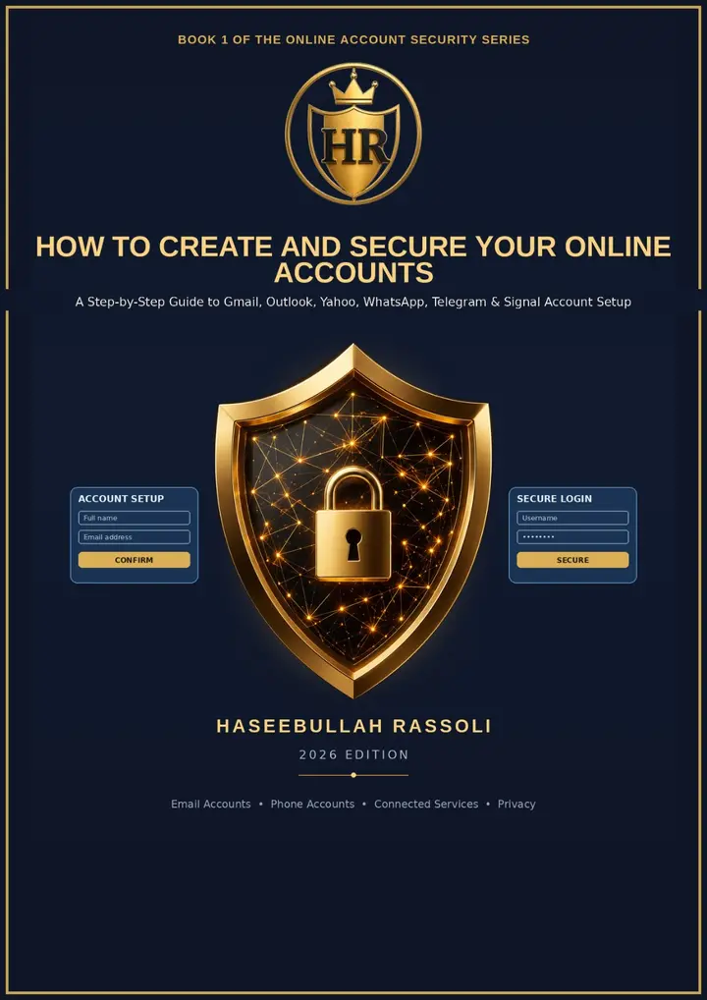

The Complete ATS Resume Guide & Builder
Resume writing, ATS preparation and career applications.
View on Amazon →PUBLICATIONS • PRACTICAL TOOLS
Explore original publications and free browser-based resume builders. Additional resources will be added as they are ready.
These book links lead to Amazon product pages.
Resume writing, ATS preparation and career applications.
View on Amazon →
Practical steps for safer online accounts.
View on Amazon →
Privacy, passwords and protecting your digital devices.
View on Amazon →Three existing online tools remain available without requiring a new account here.
For students and entry-level applicants.
Open live tool →Organize work history, experience and skills.
Open live tool →Present leadership achievements and professional experience.
Open live tool →Free practical guidance is available in the Cybersecurity section. Additional guides, checklists and digital tools are planned; no unreleased resource is presented as available now.
Browse cybersecurity guidance →